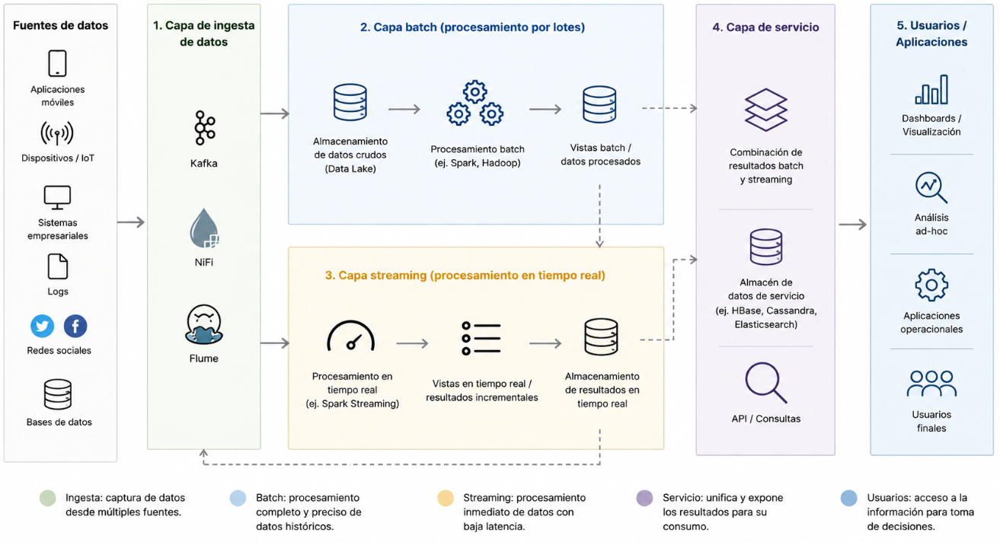
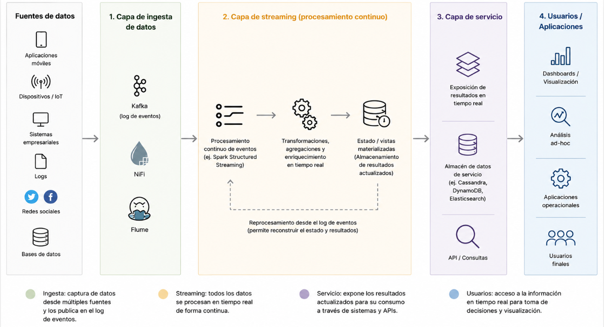

Arquitecturas Lambda y Kappa
INTRODUCCIÓN
En los sistemas Big Data, uno de los problemas principales consiste en combinar el análisis histórico (batch) con la necesidad de generar resultados con baja latencia (streaming). Para abordar este reto surgieron patrones arquitectónicos orientados al procesamiento de datos a gran escala, entre los que destacan la Arquitectura Lambda y la Arquitectura Kappa.
Apache Spark ofrece un conjunto de librerías y un modelo de ejecución distribuida que permiten implementar ambos enfoques. En particular, Spark SQL facilita el tratamiento de datos estructurados (batch), y Structured Streaming permite el procesamiento continuo de eventos en tiempo (casi) real manteniendo una API unificada basada en DataFrames/Datasets.
ARQUITECTURA LAMBDA
La arquitectura Lambda es un modelo diseñado para procesar grandes volúmenes de datos combinando el procesamiento en tiempo real y el procesamiento por lotes. Su objetivo principal es ofrecer resultados rápidos sin perder precisión en el análisis de la información.
Este tipo de arquitectura trabaja con dos flujos de procesamiento. Por un lado, la capa batch analiza todos los datos almacenados de forma periódica para generar resultados completos y precisos. Por otro lado, la capa de streaming procesa los datos en tiempo real para proporcionar respuestas inmediatas, aunque inicialmente puedan ser menos exactas.
El funcionamiento de Lambda suele dividirse en varias capas principales:
- Capa de ingesta de datos: recibe información desde diferentes fuentes mediante herramientas como Kafka, NiFi o Flume.
- Capa batch:procesa grandes cantidades de datos históricos utilizando tecnologías distribuidas.
- Capa streaming: analiza eventos en tiempo real con baja latencia.
- Capa de servicio: combina la información generada por las capas anteriores y la deja disponible para consultas y visualizaciones.
En muchos proyectos de Big Data, Apache Spark es una de las tecnologías más utilizadas dentro de esta arquitectura, ya que permite realizar tanto procesamiento batch como streaming de forma distribuida y eficiente. Gracias a Spark Streaming o Structured Streaming, es posible analizar datos prácticamente en tiempo real manteniendo una alta escalabilidad.
La arquitectura Lambda se utiliza habitualmente en sistemas que requieren análisis inmediatos, como plataformas de recomendación, monitorización de eventos, detección de fraude o aplicaciones IoT. Entre sus ventajas destacan la tolerancia a fallos, la capacidad de escalar y la reducción de latencia. Sin embargo, también puede aumentar la complejidad del sistema, ya que obliga a mantener dos pipelines de procesamiento diferentes.
En Spark, la integración con la serving layer suele hacerse escribiendo resultados a sistemas externos:
- Almacenes analíticos (por ejemplo, bases de datos columnar, data warehouses).
- Motores de búsqueda/consulta (por ejemplo, Elasticsearch).
- Bases NoSQL orientadas a lecturas rápidas (por ejemplo, Cassandra).
- Tablas materializadas o formatos de tablas en data lake (según el diseño del sistema).
Flujo de datos típico
- Los eventos se ingieren desde fuentes (aplicaciones, logs, sensores) hacia un bus o cola (p. ej., Kafka).
- Los datos se almacenan de forma duradera en un almacenamiento distribuido (histórico).
- La capa streaming procesa el stream y publica resultados recientes.
- La capa batch recalcula periódicamente vistas exactas sobre todo el histórico.
- La capa de servicio ofrece resultados combinados (batch + speed) a consumidores finales.

Imagen 1: Capas de la arquitectura Lamba
Ventajas
- Alta precisión gracias a la recomputación batch completa.
- Tolerancia a fallos: el histórico permite reprocesar ante errores.
- Capacidad de corregir y recalcular con cambios en lógica o datos.
Desventajas
- Duplicación de lógica (batch y streaming pueden requerir transformaciones similares).
- Mayor complejidad operativa (dos pipelines, coordinación y reconciliación).
- Coste de mantenimiento más alto (dos modos de ejecución, pruebas duplicadas).
ARQUITECTURA KAPPA
La arquitectura Kappa es un modelo de procesamiento de datos orientado completamente al streaming o procesamiento en tiempo real. Su objetivo principal es simplificar la gestión de sistemas Big Data eliminando la separación entre procesamiento batch y streaming que existe en la arquitectura Lambda.
En este enfoque, todos los datos se consideran eventos continuos que fluyen constantemente a través del sistema. En lugar de mantener dos pipelines diferentes, Kappa utiliza una única capa de procesamiento capaz de manejar tanto los datos en tiempo real como el reprocesamiento de información histórica.
La arquitectura Kappa se basa principalmente en plataformas de streaming distribuidas como Apache Kafka, Apache Flink o Spark Structured Streaming. Gracias a estas tecnologías, es posible almacenar eventos y volver a procesarlos cuando sea necesario utilizando la misma lógica de procesamiento.
El funcionamiento de la arquitectura Kappa suele dividirse en varias partes:
- Capa de ingesta de eventos: recibe datos procedentes de múltiples fuentes en tiempo real.
- Capa de procesamiento streaming: procesa continuamente los eventos conforme llegan al sistema.
- Capa de almacenamiento: conserva los eventos para permitir reprocesamientos futuros.
- Capa de servicio: expone los resultados procesados para aplicaciones, consultas y visualizaciones.
Una de las principales ventajas de la arquitectura Kappa es la reducción de complejidad, ya que solo existe un único flujo de procesamiento. Esto facilita el mantenimiento, disminuye la duplicidad de código y permite una mayor coherencia en el tratamiento de los datos.
La arquitectura Kappa suele utilizarse en sistemas que requieren baja latencia y análisis continuo, como monitorización de eventos, análisis de logs, IoT, detección de anomalías o plataformas de seguimiento en tiempo real.
Sin embargo, este modelo también presenta algunos desafíos. El reprocesamiento de grandes volúmenes históricos puede resultar costoso y depende en gran medida de la capacidad de las plataformas de streaming utilizadas.
Flujo de datos típico
- Los eventos se publican en un sistema de log (Kafka) de manera ordenada y durable.
- Spark Structured Streaming consume el stream y aplica transformaciones/ventanas/estado.
- Los resultados se escriben en un sistema de serving (almacenamiento analítico, base NoSQL, etc.).
- Para reprocesar histórico se reejecuta el job consumiendo el log desde el inicio (o desde un offset objetivo).

Imagen 2: Capas de la arquitectura Kappa
Ventajas
- Arquitectura más simple: una única canalización de procesamiento.
- Menor duplicidad de código y pruebas.
- Mantenimiento más sencillo y evolución más rápida.
- Encaja bien con APIs modernas unificadas (DataFrames/Structured Streaming).
Desventajas
- El reprocesamiento puede ser costoso si el log es muy grande o la retención es limitada.
- Alta dependencia del sistema de mensajería/log (retención, orden, escalabilidad, consistencia).
- Para casos extremadamente batch (cargas masivas históricas) puede no ser la opción óptima.
Ejemplo conceptual: enfoque Kappa con Spark Structured Streaming
El siguiente fragmento muestra un esquema conceptual de consumo de eventos desde Kafka y escritura de resultados. En una arquitectura Kappa, este pipeline representa la vía principal (y única) de procesamiento.
from pyspark.sql import SparkSession
spark = (SparkSession.builder
.appName("Arquitectura-Kappa")
.getOrCreate())
df_stream = (spark.readStream
.format("kafka")
.option("kafka.bootstrap.servers", "localhost:9092")
.option("subscribe", "eventos")
.load())
df_transformed = df_stream.selectExpr("CAST(value AS STRING)")
query = (df_transformed.writeStream
.format("console")
.start())
query.awaitTermination()| Característica | Lambda | Kappa |
|---|---|---|
| Procesamiento batch | Sí (capa batch dedicada) | No (todo como streaming) |
| Procesamiento en tiempo real | Sí (capa speed) | Sí (pipeline único) |
| Duplicación de lógica | Frecuente | Minimizada |
| Complejidad operativa | Alta | Media |
| Reprocesamiento histórico | Recomputación batch completa | Reproducción del stream |
| Adecuación con Spark moderno | Válida, pero más pesada | Muy alineada (API unificada) |